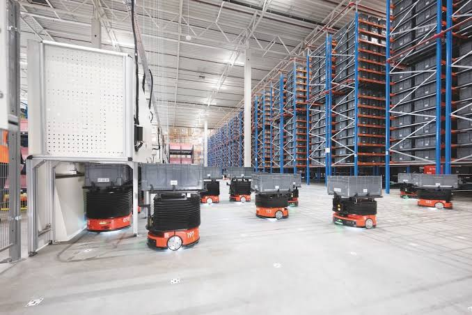

Can CTU Systems Replace 100% Manual Picking in Modern Warehouses?
As warehouse labor costs continue to rise and e-commerce order volumes increase, companies are actively exploring whether CTU (Case Transfer Unit) Goods-to-Person systems can completely replace manual picking operations. CTU systems automate the entire picking process by delivering storage units directly to operators, eliminating walking, searching, and manual handling inefficiencies. This article provides a realistic, engineering-based evaluation of whether CTU systems can achieve 100% manual picking replacement, and under what conditions full automation is feasible.

Summary
As warehouse labor costs continue to rise and e-commerce order volumes increase, companies are actively exploring whether CTU (Case Transfer Unit) Goods-to-Person systems can completely replace manual picking operations.
CTU systems automate the entire picking process by delivering storage units directly to operators, eliminating walking, searching, and manual handling inefficiencies.
This article provides a realistic, engineering-based evaluation of whether CTU systems can achieve 100% manual picking replacement, and under what conditions full automation is feasible.
Technology
- A CTU-based warehouse automation system typically includes:
- CTU robotic shuttle units
- High-density storage rack system
- Goods-to-person picking stations
- WMS (Warehouse Management System)
- WCS (Warehouse Control System)
- SCADA real-time monitoring system
- Barcode / RFID scanning systems
- Conveyor or buffer transfer modules
- Intelligent task scheduling algorithm
- Safety sensors and emergency stop systems
Challenge
Traditional manual picking systems face increasing pressure due to:
Rising labor costs and shortage of warehouse workers
High SKU complexity in e-commerce operations
Inefficient walking and searching processes
High error rates under pressure conditions
Limited scalability during peak demand periods
These challenges raise a key question:
👉 Can automation completely replace human picking?
Solution
CTU systems solve most manual picking inefficiencies by:
Removing walking between aisles
Automating goods retrieval
Delivering items directly to operators
Standardizing picking workflows
However, full replacement depends on:
SKU complexity
Order variability
Packaging requirements
Exception handling needs
Workflow & Layout
Step 1: Order Processing
Orders are received via ERP/WMS
System decomposes orders into picking tasks
Priority and batching logic applied
Step 2: Automated Task Assignment
WCS assigns tasks to CTU robots
System calculates optimal retrieval routes
Step 3: CTU Retrieval Operation
Robots move through storage racks
Retrieve required bins or cases
Transport goods to picking station
Step 4: Goods-to-Person Picking
Operator picks items at workstation
System verifies accuracy via barcode/RFID
Picking process is digitally confirmed
Step 5: Order Completion
Items are packed and sent to outbound
Inventory is updated in real time
Results & ROI
- 1️⃣ Can CTU Replace Manual Picking?
- ✔ In structured warehouse environments: YES
- ✔ In high-SKU controlled systems: YES
- ⚠ In complex mixed workflows: PARTIAL
- 2️⃣ Labor Replacement Rate
- CTU systems typically achieve:
- 60%–90% labor reduction
- Near elimination of walking tasks
- Reduced dependency on skilled pickers
- 3️⃣ Efficiency Improvement
- Compared to manual systems:
- 2x–4x picking efficiency improvement
- Continuous 24/7 operation capability
- Stable performance during peak demand
- 4️⃣ Remaining Human Roles
- Even in automated CTU warehouses
- humans are still needed for:
- Quality control
- Exception handling
- Packaging and special orders
- System supervision
- 5️⃣ ROI Impact
- Typical payback period:
- 👉 18–36 months
- Driven by:
- Labor cost reduction
- Productivity increase
- Error reduction
- Space utilization improvement
Equipment List
- Core CTU Hardware：
- CTU robotic shuttle units
- High-density shelving system
- Picking workstation modules
- Software Systems：
- WMS warehouse management system
- WCS control system
- SCADA monitoring platform
- Task optimization engine
- Safety Systems：
- Light curtain safety barriers
- Emergency stop systems
- Collision detection sensors
- System diagnostics modules
Project Overview / Opening
CTU Goods-to-Person systems represent a major shift in warehouse operations, transforming manual picking processes into fully automated robotic workflows.
Instead of workers traveling through warehouse aisles, robots bring goods directly to operators, dramatically improving efficiency and reducing labor intensity.
Key Points
- 1️⃣ Full Replacement Is Condition-Based
- CTU can fully replace manual picking when:
- SKU structure is stable
- Workflow is standardized
- High automation density is implemented
- 2️⃣ Goods-to-Person Transformation
- Core logic change:
- 👉 Worker goes to goods → Goods go to worker
- 3️⃣ Automation Coverage
- CTU systems automate:
- Retrieval
- Transport
- Task assignment
- Inventory tracking
- 4️⃣ Human Role Reduction
- Manual labor is reduced but not always eliminated due to:
- Exceptions handling
- Packaging diversity
- Quality inspection requirements
- 5️⃣ Scalability Advantage
- CTU systems scale easily by:
- Adding robots
- Expanding racks
- Increasing stations
Implementation / Workflow
Phase 1: Feasibility Study (2–3 weeks)
SKU and order structure analysis
Automation suitability evaluation
Phase 2: System Design (2–4 weeks)
Layout planning
Robot density configuration
Phase 3: Engineering Integration (4–8 weeks)
Hardware installation
Software system integration
Phase 4: Deployment (2–4 weeks)
System commissioning
Operational testing
Phase 5: Optimization (1–2 weeks)
Performance tuning
Workflow balancing
Customer Value / Results
Operational Value:
Significant reduction in manual picking workload
Higher throughput efficiency
Stable and predictable operations
Financial Value:
Lower long-term labor costs
Reduced error-related losses
Strong ROI within 18–36 months
Strategic Value:
Future-proof warehouse architecture
Scalable automation model
Competitive logistics advantage
Conclusion / Next Step
CTU systems can replace a large portion—and in some cases nearly all—manual picking operations, but full replacement depends on warehouse complexity and operational design.
In most real-world applications:
✔ 60%–90% labor reduction is achievable
✔ Fully automated picking is possible in controlled environments
✔ Hybrid human + automation models remain common
CTU automation is not just a replacement technology—it is a redefinition of warehouse picking architecture.
If you are evaluating CTU automation, we can design a system model that shows your exact replacement ratio, ROI timeline, and cost structure based on your warehouse data.
SEO Title
Can CTU Systems Replace 100% Manual Picking in Modern Warehouses?
SEO Description
As warehouse labor costs continue to rise and e-commerce order volumes increase, companies are actively exploring whether CTU (Case Transfer Unit) Goods-to-Person systems can completely replace manual picking operations.
CTU systems automate the entire picking process by delivering storage units directly to operators, eliminating walking, searching, and manual handling inefficiencies.
This article provides a realistic, engineering-based evaluation of whether CTU systems can achieve 100% manual picking replacement, and under what conditions full automation is feasible.
Related Blog
Start with Your Business Challenge
Tell us about your warehouse, factory, or production requirements. We'll help you explore practical automation solutions and relevant project references.